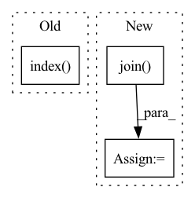

Pattern ID :12597
Before Change
self.masks_fps = [os.path.join(masks_dir, mask_id) for mask_id in self.mask_ids]
// convert str names to class values on masks
self.class_values = [self.CLASSES.index( cls.lower()) +1 for cls in classes]
self.augmentation = augmentation
self.preprocessing = preprocessingAfter Change
def __init__(self, data_dir, augmentation=None):
images_dir = os.path.join(data_dir, "rgb")
masks_dir = os.path.join( data_dir, "masks")
self.image_ids = sorted(os.listdir(images_dir))
self.mask_ids = sorted(os.listdir(masks_dir))
self.images_fps = [os.path.join(images_dir, image_id) for image_id in self.image_ids]
self.masks_fps = [os.path.join(masks_dir, mask_id) for mask_id in self.mask_ids]In pattern: SUPERPATTERN
Frequency: 3
Non-data size: 3
Instances Fragment ID: 42781308
Project Name: ais-bonn/vp-suite
Commit Name: 390d6a59e5d07a80f1d75348720f59d34fb085a0
Time: 2021-07-15
Author: boltres@ais.uni-bonn.de
File Name: dataset.py
M Class Name: SynpickDataset
N Class Name: SynpickDataset
M Method Name: __init__(3)
N Method Name: __init__(6)
M Parent Class: Dataset
N Parent Class: Dataset
M File Name: dataset.py
N File Name: dataset.py
M Start Line: 15
M End Line: 25
N Start Line: 15
N End Line: 17
Before Change
return ["ner_f1", "em", "pem"]
def _make_example(self, token_list, label_list, domain, **kwargs):
self.domain2labels[domain].index( label)
example_id = ex["id"]
return Example.from_raw(self.name + "/" + example_id, context, question, answer,
preprocess=self.preprocess_field, lower=False)After Change
def _make_example(self, example_id, token_list, label_list, domain):
question = " ".join(token_list)
context = ""
answer = " ".join( [str(self.all_labels.index(label)) for label in label_list])
return Example.from_raw(self.name + "/" + str(example_id), context, question, answer,
preprocess=self.preprocess_field, lower=False)
Fragment ID: 42781309
Project Name: stanford-oval/genienlp
Commit Name: a11d1b37f5a1e1e220d5abba97521ae2278559dc
Time: 2021-03-15
Author: mehrad@stanford.edu
File Name: genienlp/tasks/generic_task.py
M Class Name: CrossNERTask
N Class Name: CrossNERTask
M Method Name: _make_example(5)
N Method Name: _make_example(4)
M Parent Class: BaseTask
N Parent Class: BaseTask
M File Name: genienlp/tasks/generic_task.py
N File Name: genienlp/tasks/generic_task.py
M Start Line: 226
M End Line: 229
N Start Line: 237
N End Line: 242
Before Change
with f:
input_docs = input_fn()
with TimeContext(f"QPS: indexing {len(input_docs)}", logger=f.logger):
f.index( input_docs, request_size=8)
// for search
def query():After Change
flow = Flow.load_config("flows/index.yml")
with flow:
input_docs = input_generator(num_docs=num_docs)
data_path = os.path.join( os.path.dirname(__file__),
os.environ.get("JINA_DATA_FILE", None))
flow.logger.info(f"Indexing {data_path}")
flow.post(on="/index", inputs=input_docs, request_size=10,
show_progress=True)
Fragment ID: 42781310
Project Name: jina-ai/examples
Commit Name: e2bac6411dfc263b22bd8023274ce5a662e21c57
Time: 2021-07-16
Author: 51201318+slettner@users.noreply.github.com
File Name: multires-lyrics-search/app.py
M Class Name: AnonimousClass
N Class Name: AnonimousClass
M Method Name: index(1)
N Method Name: index(0)
M Parent Class:
N Parent Class:
M File Name: multires-lyrics-search/app.py
N File Name: multires-lyrics-search/app.py
M Start Line: 54
M End Line: 61
N Start Line: 29
N End Line: 37